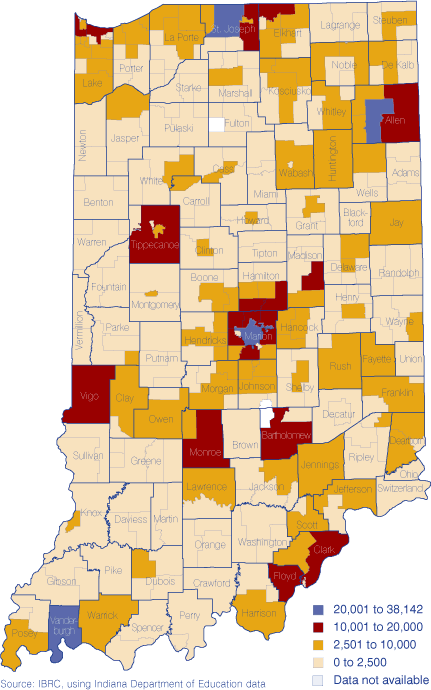

Over the past few years, you have probably heard of public school teachers striking and staging protests for higher pay. This is by no means a new issue, nor is it the only issue with public educator employment in the United States.
However, the NEA found that across the 2022-2023 school year, the average public school teacher salary came in at $69,544 - a 4.1% increase from the year prior, and the highest year-by-year increase in over a decade. However, these increases still leave many states such as Indiana short of the national average.
According to the Indiana Education Employment Relations Board (IEERB), the average public school teacher salary in the state comes in at over $10,000 below the average nationwide - coming in at just $58,531 in 2022-2023. Data shows that certain teachers face pay disparities compared to others in Indiana. For example, secondary (high school) teachers were paid an average of $60,000 in the 2022-2023 school year, which is above that state average. However, middle and elementary school teachers fall around $2,000 and $4,000 short of that average, respectively, as shown in Figure 1.
Kristie LeBeau, Sociology Fellow at Harvard University and Indiana native says these disparities appear in more ways than just level of teaching. In fact, many districts considered “rural” in Indiana see high turnover rates due to lower starting pay.
“What comes to mind was a school district outside of Indy [Indianapolis]. They became a training ground for teachers because you had people coming out of IU [Indiana University] or Purdue and going to their district as the first job, staying there for two years, but then the Avons and Carmels [two affluent suburbs of Indianapolis] of the world could pay them more and so then they were looking for new teachers after two years.”
However, the state government has taken some steps to try and equalize districts across the Hoosier State. Prior to the 2022-2023 school year, state lawmakers passed a bill to set the minimum teacher salary at $40,000 across the state. While 99% of districts were able to meet this minimum, successfully raising many teacher’s salaries, it failed to make any significant progress in closing the gap between poor, underfunded rural and inner city districts with their wealthy, suburban counterparts - many of the latter already had set their own minimums high above $40,000. But according to LeBeau, 95% of rural districts in the state were under the minimum when the law was enacted.

While this minimum was set in part to raise Indiana’s teacher salaries to make them more competitive with other Midwestern states, there is also a competition within the state itself. School districts in Indiana often set their own minimums in response to nearby district’s salaries.
LeBeau says “...that's something else I saw, is this clustering effect of school neighboring. I interviewed 11 districts, and most said that they based their salaries based on the nearby districts. Paying their teachers more because they have to be competitive to get teachers.”
The combination of increasing teacher mobility and a widespread nationwide teacher shortage poses a serious threat to the future of many rural school districts like the ones LeBeau was discussing. In 2023, the Indiana Capital Chronicle reported that there were over 2,000 unfulfilled teaching vacancies across the Hoosier State. Recent reporting has shown that the nationwide number could be anywhere from 36,000 to 58,000, depending on the methodology. While this number poses a legitimate threat to almost every school district across the country, rural districts are often hit much harder than urban and suburban ones. This is because pay is just one aspect of what may attract a teacher to work within a certain district. Lack of public transportation, long distances from essential resources, and lack of nightlife are all issues that affect rural areas, turning many (especially younger) teachers away from taking jobs there.
Teacher mobility is another thing smaller districts have to worry about. LeBeau says that teachers, especially ones in Indiana, are especially mobile. “…it's tough because teachers are really mobile, especially if you're in a state where there's not a lot of geographic isolation…in Indiana you've got I-65 and all these easy ways to get from place to place, so teachers are quite mobile - you could live in one place and teach another.”
This could be especially scary for those at the higher levels of education at the state level in Indiana, as the state ranked lower than many of its Midwestern counterparts as of 2019, the latest year on record with data for all states:
A 2022 study from the International Journal of Environmental Research and Public Health (IJERPH) revealed that multiple sociological and demographic factors can be attributed to increased mobility: “Quantitative studies articles agree that mobility is more frequent in young teachers, male, belonging to urban environments with characteristics of greater poverty or who serve more disadvantaged students, and who belong to isolated or remote localities. Within the studies with a qualitative or mixed focus, there is an agreement that more disadvantaged conditions seem to be related to greater mobility.”
The IJERPH study makes it clear: With everything facing rural and underfunded school districts, from increased teacher mobility to nationwide teacher shortages, smaller districts need to find ways to make themselves more attractive to teachers looking to work there. Whether this comes from the state, increased taxes, or something else, these districts would greatly benefit from some outside assistance.